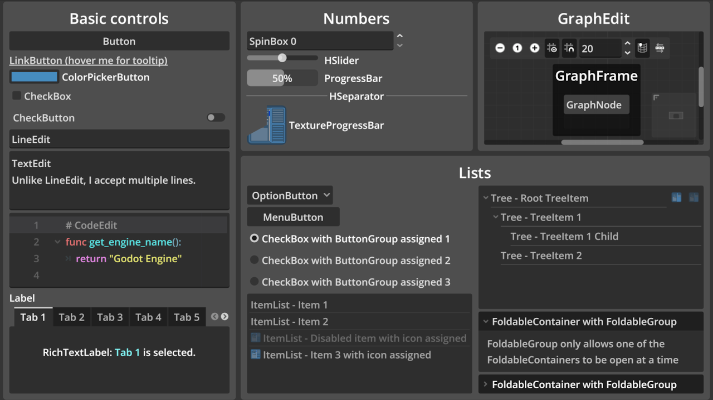

Godot's upstream gui/control_gallery demo, copied into Walker with the title changed. One screen of Control nodes, each named on its face.
OBSERVED in code PROPOSED not in code MISSING intent nobody wrote down
No gate signed. No person has reviewed it visually. Arrow keys / space to advance. → GDD.md header

OBSERVED godot/screenshots/control_gallery.webp: the upstream demo screenshot kept with the copy. Not a Walker capture; none exists yet.
Every control changes only itself. → GDD §3, §5
CORE % not computable: no MVP, no tags. → GDD §11, Q-05
Real mouse and key events through the root viewport: toggles, tabs, typing, slider bounds, radio exclusivity, tree, foldables, popups, SpinBox 42, ItemList disabled row, split drag.
controls-expanded-input-20260924.log · state only. Rendered layout, colors, highlighting, graph: unverified.
PROPOSED H-01 visual pass vs upstream screenshot · H-02 name five controls on sight (only if Q-04 picks recognition)
This is a reference card. Treat it as one. Do not write PX goals for it, and do not add handlers to make a film look better, until someone says what Walker wants from it.